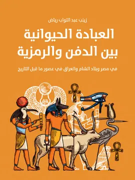

العبادة الحيوانية بين الدفن والرمزية في مصر وبلاد الشام والعراق: في عصور ما قبل التاريخ

قراءة عربية أصلية محددة النطاق في الصفحات 13 إلى 16، 19 إلى 20 من ملف PDF المرتبط، وليست تلخيصا كاملا للكتاب. نناقش ما تدعمه هذه المقاطع فقط.
حين دُفنت الحيوانات كآلهة
تفتتح الباحثة زينب عبد التواب رياض رياض مقدمتها بأن موضوع «الدفنات الحيوانية في عصور ما قبل التاريخ المبكرة في مصر وبلاد الشام والعراق» يرجع اختياره إلى مقالة الدكتور مصطفى عطا الله التي نُشرت بمجلد الآثاريين العرب عام ٢٠٠٠، فأشعلت بداخلها جذوة الحماس لمعرفة المزيد. ويرسم الكتاب خريطته: الباب الأول للدفنات الحيوانية في مصر ويتضمن نبذة عن العبادة ودفن الحيوانات كأحد المظاهر الدينية في مصر القديمة، ثم الفصل الأول عن دفنات الثيران والأبقار من عصور ما قبل التاريخ وحتى العصر العتيق. بحث أثري متخصص (٣٧٨ صفحة) من إصدارات هنداوي الحديثة (٢٠٢٤)، يضيف رفًا جديدًا لقسم الدراسات الأثرية في المكتبة.
زاوية وحدود القراءة
قراءة موجزة من ص ١٣ إلى ص ١٦ ومن ص ١٩ إلى ص ٢٠ من أصل ٣٧٨ صفحة، تعرض مقدمة البحث وخطته، لا الدراسة كاملة.
الطبعة والقراءة
صدر هذا الكتاب عن مؤسسة هنداوي عام ٢٠٢٤. جميع حقوق النشر الخاصة بتصميم هذا الكتاب وتصميم الغلاف محفوظة لمؤسسة هنداوي. جميع حقوق النشر الخاصة بنص العمل الأصلي محفوظة للسيدة الدكتورة زينب عبد التواب رياض.
تنزيل PDF المجاني ↓ القراءة والمصدر الرسمي ↗